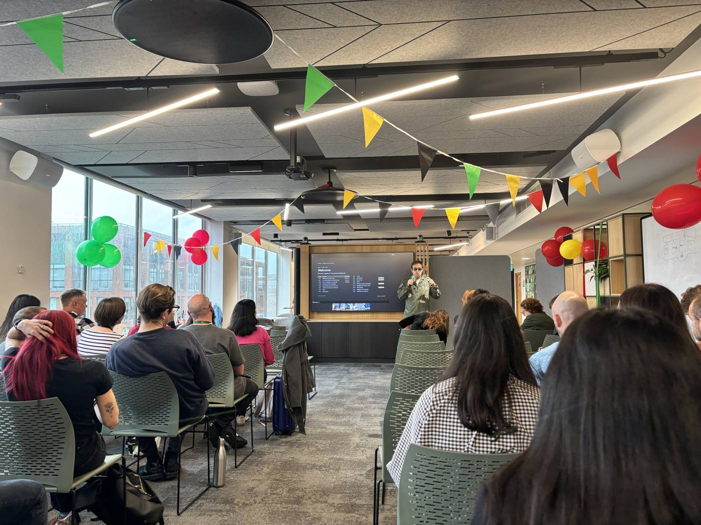

Phil BonnardHOST
- Built "Said Store", an iOS app for conference notes.
- ChatGPT for strategy: get it to interview you.
- Claude or Codex for the build.
- Know when to stop.
- Know when to plan before you build.
I built a small Undertale-style phone game that helps a 10-year-old practise French between weekly lessons: numbers to 100, where I live, and the weather.
The brief for the day: build something real, publish it, take it home. I went from an empty repo at 11:56 to a live game, an agreed PRD and an intro page by 15:11, all from my phone with Claude and GitHub. No laptop.

Talked the idea through with Claude: one 10-year-old, a weekly lesson, almost no practice in between.
Agreed a small first version: four rooms, numbers 21–100, home and weather. Written up as the PRD.
Built on my phone with Claude, reviewed and merged in GitHub. One static page with four monsters, spoken questions, hints and saved progress.
Live on GitHub Pages by 13:03, with automatic deploys from 13:11.
Harder-to-guess questions, stronger hints, and the pixel font back after trying a plainer one.
Next: the child plays it for a week, with a number check before and after.
Then decide: fix problems, add content, or stop. A microphone is the first open question.
My pitch, as I wrote it in my notebook:
A child falls into a dungeon and finds their way home by answering spoken French questions about where they live, the weather, hobbies and numbers up to 100, cheering up 4 friendly monsters and sparing them instead of fighting them.
Initial commit for Le Donjon des Mots.
The whole game as one static page, ready for GitHub Pages.
A GitHub Actions workflow deploys every merge to Pages.
Compound numbers and 70–100, random questions per room, 3 shuffled choices, stronger hints like "70 = soixante + dix".
Tried a plainer font, chose the pixel font everywhere, a step larger.
A proper start to the adventure.
User, goals, scope, assumptions and a one-week test plan, linked from the README.
A landing page in the same arcade style that explains the game and links to it.
| ROOM | MONSTER | PRACTISES |
|---|---|---|
| La Grotte | Brumette, a ghost | Where I live: town, village, countryside, sea, mountains |
| Le Pont | Croquette, a dog | Warm-up 1–20, then 21–69 (vingt et un, trente-deux …) |
| La Mare | Rainette, a frog | Weather and places, plus reading 21–69 |
| La Grande Porte | Monsieur Cent, a stone giant | 70–100 (soixante-dix, quatre-vingts, cent) |
Before and after the week, the child hears these 8 numbers and taps the digits. The goal is a score at least 3 higher, plus at least two unprompted plays.
Watching whether they say the "Répète !" lines aloud decides if a microphone is worth adding later.
AI gets you there faster. People decide where "there" is.
What I did: